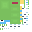
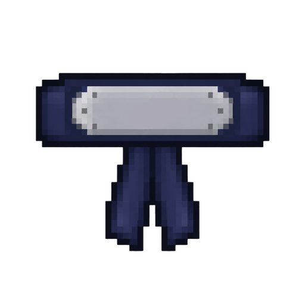
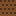

Become a Shinobi.
Master your path.
A player-focused wiki for Steve: Way of Shinobi. Learn how to begin, understand clans and jutsu, browse items and entities, and keep up with every update.


Explore the Wiki
Everything is split into clear player-facing sections. Each category already has a page structure ready for you to fill with final information.

Getting Started
Installation notes, first steps, academy flow, becoming a Genin and early goals.
Clans & Jutsu
Clan abilities, chakra natures, technique ranks, requirements and combat notes.
Items
Weapons, clothing, Ryo, utility items, food and special equipment.

Entities
Genin, missing-nin, summons, companions, puppets and hostile mobs.

Villages & NPCs
Village identity, important locations, vendors and useful NPC professions.

Missions
Mission ranks, objectives, rewards, progression and special rules.
Progression & Chakra
Character stats, chakra mechanics, learning requirements and growth systems.

Controls
Keyboard reference for menus, hand seals, techniques and special modes.

Changelog
Keep patch notes readable and searchable instead of burying them in chat posts.
Latest Update
Use this block for the newest patch summary, then keep the full history on the Changelog page.
New Shinobi clothing, summon damage progression, Gama Chan wallet, Inuzuka dog teleport, Chakra Control changes and a Byakugo rebalance.